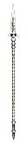
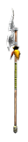
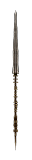

Filters:
Achilles' Spear
231 - 245 Damage
25% Pierce Ratio
Speed: Slow
Set : Patroclus' Disguise
+30% Physical Damage
+30% Pierce Damage
72 - 132 Reduced Armor for 3.0 Seconds
+45 Strength
+150 Health
+150 Offensive Ability
+35% Attack Speed
LVL 47, STR 173, DEX 423
Alexander's Spear
231 - 245 Damage
25% Pierce Ratio
Speed: Very Slow
Set : Alexander's Panoply
+25% Pierce Damage
198 - 399 Bleeding Damage over 3.0 Seconds
+20% Bleeding Damage with +30% Improved Duration
+32 Dexterity
+88 Offensive Ability
Grants Skill : Gouge
LVL 46, STR 173, DEX 423
Amazigh Banner Stake
80 - 90 Damage
25% Pierce Ratio
Speed: Slow
10% Reduction to Enemy's Health
+120 Defensive Ability
+15% Total Speed
+2 to Angelic Altar
+2 to Astuteness
+1 to all Skills
Bonus to All Pets:
+15% Fire Damage
+15% Burn Damage
24 Fire Damage
10% Physical Resistance
LVL 30, STR 112, DEX 235
Amazonian Spear
180 - 192 Damage
25% Pierce Ratio
Speed: Slow
10.0% Chance of +200% increased Pierce Ratio
240 - 360 Poison Damage over 3.0 Seconds
10.0% Chance of +100% Poison Damage
15.0% Chance of 40% Slowed for 3.0 Seconds
+26 Dexterity
+100 Offensive Ability
+25% Attack Speed
+10% Movement Speed
+2 to Build Bolt Trap
+2 to Black Widow
LVL 42, STR 147, DEX 344
Amber Herald
254 - 272 Damage
25% Pierce Ratio
Speed: Very Slow
360 Poison Damage over 4.0 Seconds
360 Life Leech over 4.0 Seconds
+300 Health
+50% Damage to Plants
+50% Damage to Insectoid
+1 to all skills in Witchcraft Mastery
Grants Skill : Black Widow
LVL 47, STR 179, DEX 441
Ancient Tartessian Spike

73 - 91 Damage
30% Pierce Ratio
Speed: Average
Difficulty : Normal
90 Frostburn Damage over 3.0 Seconds
+30% Frostburn Damage with +10% Improved Duration
Bonus to All Pets:
60 Frostburn Damage over 3.0 Seconds
+20% Frostburn Damage with +10% Improved Duration
LVL 28, STR 106, DEX 211
Ancient Tartessian Spike
170 - 182 Damage
30% Pierce Ratio
Speed: Average
Difficulty : Epic
180 Frostburn Damage over 3.0 Seconds
+50% Frostburn Damage with +20% Improved Duration
Bonus to All Pets:
90 Frostburn Damage over 3.0 Seconds
+25% Frostburn Damage with +20% Improved Duration
LVL 42, STR 154, DEX 349
Ancient Tartessian Spike
261 - 282 Damage
30% Pierce Ratio
Speed: Average
Difficulty : Legendary
270 Frostburn Damage over 3.0 Seconds
+60% Frostburn Damage with +30% Improved Duration
Bonus to All Pets:
120 Frostburn Damage over 3.0 Seconds
+30% Frostburn Damage with +30% Improved Duration
LVL 52, STR 186, DEX 441
Anendjib's Spear
120 - 133 Damage
25% Pierce Ratio
Speed: Slow
+20% Pierce Damage
150 Bleeding Damage over 3.0 Seconds
+25% Bleeding Damage with +50% Improved Duration
10.0% Chance of 150 Bonus Damage
21 - 31 Piercing Damage
+2 to Hemorrhage
LVL 35, STR 135, DEX 308
Antediluvian Trident
73 - 91 Damage
25% Pierce Ratio
Speed: Very Slow
Difficulty : Normal
33 Poison Damage per Second
+0% Poison Damage with +33% Improved Duration
33 Vitality Decay per Second
+0% Vitality Decay with +33% Improved Duration
Bonus to All Pets:
20 Poison Damage per Second
+0% Poison Damage with +33% Improved Duration
LVL 28, STR 112, DEX 228
Antediluvian Trident
170 - 182 Damage
25% Pierce Ratio
Speed: Very Slow
Difficulty : Epic
66 Poison Damage per Second
+0% Poison Damage with +66% Improved Duration
66 Vitality Decay per Second
+0% Vitality Decay with +66% Improved Duration
Bonus to All Pets:
40 Poison Damage per Second
+0% Poison Damage with +66% Improved Duration
LVL 42, STR 160, DEX 366
Antediluvian Trident
261 - 282 Damage
25% Pierce Ratio
Speed: Very Slow
Difficulty : Legendary
100 Poison Damage per Second
+0% Poison Damage with +100% Improved Duration
100 Vitality Decay per Second
+0% Vitality Decay with +100% Improved Duration
Bonus to All Pets:
60 Poison Damage per Second
+0% Poison Damage with +100% Improved Duration
LVL 52, STR 192, DEX 458
Apple Bearer's Spear
97 - 109 Damage
25% Pierce Ratio
Speed: Slow
Set : Armor of the Immortal Guard
20.0% Chance of 50% Reduction to Enemy's Health
11% Physical Resistance
11% Pierce Resistance
+19 Dexterity
+10% Attack Speed
Grants Skill : Take Down
LVL 31, STR 126, DEX 281
Ares' Wrath

243 - 263 Damage
30% Pierce Ratio
Speed: Very Slow
9.0% Chance of +200% Physical Damage
+50% Life Leech
34 Vitality Damage
11% of Attack damage converted to Health
+10% Strength
+10% Dexterity
Grants Skill : War Wind
LVL 45, STR 168, DEX 409
Atlantis' Uncovered Trident
170 - 185 Damage
25% Pierce Ratio
Difficulty : Epic
Set : Atlantis' Uncovered Treasures (Epic)
+20% Cold Damage
+20% Frostburn Damage
+2 to Impale
LVL 42, STR 170, DEX 395
Atlantis' Uncovered Trident
256 - 272 Damage
25% Pierce Ratio
Difficulty : Legendary
Set : Atlantis' Uncovered Treasures (Legendary)
+25% Cold Damage
+25% Frostburn Damage
+3 to Impale
LVL 52, STR 208, DEX 504
Automedon's Spear
100 - 119 Damage
30% Pierce Ratio
Speed: Very Slow
20.0% Chance of +50% Physical Damage
12 - 24 Bonus Damage
15 Reduced Resistances for 3.0 Seconds
+25% Attack Speed
+2 to Fiery Strikes
LVL 31, STR 126, DEX 281
Babylonian Spear
56 - 71 Damage
30% Pierce Ratio
Speed: Slow
Set : Babylonian Raiment
+11% Physical Damage
7.0% Chance of 110% Reduction to Enemy's Health
+28 Strength
+28 Dexterity
+124 Offensive Ability
+10% Attack Speed
LVL 22, STR 96, DEX 188
Baetylus Spear

54 - 80 Damage
30% Pierce Ratio
Speed: Slow
+10% Physical Damage
15 Life Leech per Second
33.0% Chance of +150% Life Leech
+10% Shield Block Chance
Grants Skill : War Wind
LVL 26, STR 102, DEX 206
Blacksteel Spike
90 - 104 Damage
33% Pierce Ratio
Speed: Very Slow
Difficulty : Normal
+15% increased Pierce Ratio
+20% Pierce Damage
80 Reduced Armor for 3.0 Seconds
LVL 34, STR 124, DEX 263
Blacksteel Spike
182 - 198 Damage
33% Pierce Ratio
Speed: Very Slow
Difficulty : Epic
+20% increased Pierce Ratio
+25% Pierce Damage
160 Reduced Armor for 3.0 Seconds
LVL 46, STR 168, DEX 389
Blacksteel Spike
272 - 290 Damage
33% Pierce Ratio
Speed: Very Slow
Difficulty : Legendary
+25% increased Pierce Ratio
+30% Pierce Damage
240 Reduced Armor for 3.0 Seconds
LVL 56, STR 206, DEX 499
Blood Letter
26 - 35 Damage
25% Pierce Ratio
Speed: Slow
+20% Physical Damage
+15% Pierce Damage
18 - 30 Bleeding Damage over 3.0 Seconds
+0% Bleeding Damage over +100% Improved Duration
+15 Offenisve Ability
LVL 7, STR 64, DEX 92
Blood of Ouranos
231 - 245 Damage
25% Pierce Ratio
Speed: Slow
186 Bleeding Damage over 3.0 Seconds
10.0% Chance of +200% Bleeding Damage
3 - 7% Energy Drain
120% Bleeding Resistance
+44 Dexterity
+175 Health
+25% Attack Speed
Grants Skill : Blood of Ouranos
Bonus to All Pets:
70 Bleeding Damage over 3.0 Seconds
+40% Bleeding Damage
LVL 45, STR 168, DEX 409
Centurion's Spear

30 - 45 Damage
25% Pierce Ratio
Speed: Slow
Difficulty : Normal
33% Slower Attack for 3.0 Seconds
+1 to all skills in Lifegiving Mastery
Grants Skill : Storm Enchantment
LVL 17, STR 110, DEX 175
Centurion's Spear
125 - 140 Damage
25% Pierce Ratio
Speed: Slow
Difficulty : Epic
33% Slower Attack for 4.0 Seconds
+1 to all skills in Lifegiving Mastery
Grants Skill : Storm Enchantment
LVL 40, STR 170, DEX 320
Centurion's Spear
242 - 259 Damage
25% Pierce Ratio
Speed: Slow
Difficulty : Legendary
33% Slower Attack for 5.0 Seconds
+2 to all skills in Lifegiving Mastery
Grants Skill : Storm Enchantment
LVL 51, STR 200, DEX 410
Cuttlebone Standard
40 - 48 Damage
25% Pierce Ratio
Speed: Slow
+10% Total Damage
40 - 48 Elemental Damage
-10% Recharge
-10% Energy Cost
+2 to Insignia of Anguish
+2 to Gravestone
+1 to all Skills
LVL 28, STR 112, DEX 236
Defiler
97 - 109 Damage
25% Pierce Ratio
Speed: Slow
35% Chance of:
162 - 270 Poison Damage over 3.0 Seconds
20 Reduced Resistances for 3.0 Seconds
30% Pierce Resistance
30% Poison Resistance
+17 Dexterity
+25% Attack Speed
Grants Skill : Plague (Activated on attack)
Plague afflicts nearby enemies with a debilitating aliment that reduces their health and quickly spreads to other nearby creatures.
8.0 Second(s) Recharge
70 Energy Cost
4.0 Second Duration
9 Poison Damage per Second
5 - 9% Reduction to Enemy's Health
LVL 32, STR 126, DEX 281
Desert's Kiss
36 - 51 Damage
35% Pierce Ratio
Speed: Very Slow
12% Chance of:
13 - 17 Fire Damage
2.0 - 4.0 second(s) of Confusion
18% Fire Resistance
18% Poison Resistance
+10 Strength
+10 Dexterity
+22 Offensive Ability
LVL 15, STR 80, DEX 140
Deshret
47 - 55 Damage
25% Pierce Ratio
Speed: Slow
3 - 14 Piercing Damage
3 - 14 Elemental Damage
+16 Dexterity
+40 Health
+13% Attack Speed
LVL 18, STR 88, DEX 164
Destroyer of Myriad Dimensions

260 - 282 Damage
25% Pierce Ratio
Speed: Slow
Set : Journey of Myriad Dimensions
+15% Total Damage
180 - 280 Electrical Burn Damage over 4.0 Seconds
18% Energy Drain (200% of lost Energy as Damage)
40% Slower Attack for 1.0 Seconds
180 - 220 Electrical Burn Retaliation over 4.0 Seconds
+10% Intelligence
+100% Casting Speed
+2 to Interdimensional Breach
+2 to Abiding Majesty
LVL 61, STR 210, DEX 497
Diamondspike Lance

27 - 34 Damage
25% Pierce Ratio
Speed: Slow
3 - 10 Piercing Damage
8.0% Chance of 22% Reduction to Enemy's Health
+6 Dexterity
+30 Offensive Ability
+10% Movement Speed
Grants Skill : Gouge
LVL 7, STR 64, DEX 92
Einherjar's Line
90 - 104 Damage
25% Pierce Ratio
Speed: Average
Difficulty : Normal
+30% Damage to Giants
Grants Skill : Volley
LVL 34, STR 122, DEX 257
Einherjar's Line
182 - 198 Damage
25% Pierce Ratio
Speed: Average
Difficulty : Epic
+30% Damage to Giants
Grants Skill : Volley
LVL 46, STR 166, DEX 384
Einherjar's Line
272 - 290 Damage
25% Pierce Ratio
Speed: Average
Difficulty : Legendary
+30% Damage to Giants
Grants Skill : Volley
LVL 56, STR 204, DEX 493
Fei Lian's Galespear
180 - 192 Damage
25% Pierce Ratio
Speed: Slow
+25% Lightning Damage
+25% Electrical Burn Damage
60 - 210 Lightning Damage
35% Cold Resistance
35% Lightning Resistance
+23 Dexterity
+53 Offensive Ability
+25% Attack Speed
Grants Skill : Thunderclap
LVL 40, STR 147, DEX 344
Fire Spike
26 - 39 Damage
30% Pierce Ratio
Speed: Very Slow
+20% Physical Damage
+20% Fire Damage
6 - 8 Fire Damage
11% Fire Resistance
+29 Health
LVL 7, STR 64, DEX 92
Flintvine

67 - 72 Damage
25% Pierce Ratio
Speed: Average
+35% Pierce Damage
25% Chance of:
60 Poison Damage over 3.0 Seconds
+50% Poison Damage
30% Slowed for 3.0 Seconds
99 Poison Retaliation over 3.0 Seconds
+10% Energy
+18% Total Speed
+2 to Nature Familiarity
+2 to Antidote
LVL 31, STR 112, DEX 236
Fury of the Three Amazons
231 - 245 Damage
25% Pierce Ratio
Speed: Slow
+30% Physical Damage
+30% Pierce Damage
35 Piercing Damage
+44 Strength
+30% Attack Speed
+2 to Tempest Spear
+2 to Battle Momentum
LVL 47, STR 173, DEX 423
Gaer Bolga

109 - 123 Damage
25% Pierce Ratio
Speed: Slow
120 - 180 Bleeding Damage over 3.0 Seconds
10.0% Chance of +100% Bleeding Damage
20% Chance to Fumble attacks for 3.0 Seconds
40% Chance of Impaired Aim for 3.0 Seconds
30% Slowed for 3.0 Seconds
+60 Offensive Ability
+3 to Treacherous Javelin
+3 to Combat Spirit
LVL 42, STR 122, DEX 257
Gill Raker
165 - 200 Damage
25% Pierce Ratio
Speed: Very Slow
+15% Physical Damage
150 Bleeding Damage over 3.0 Seconds
50 Piercing Damage
50.0% Chance of 150 Piercing Retaliation
+180 Offensive Ability
+33% Damage to Beastmen
+3 to Scavenger
+3 to Intimidating Screech
Bonus to All Pets:
30% Pierce Damage
50 Piercing Damage
50 Piercing Retaliation
LVL 41, STR 300, DEX 358
Goldfang Barb
73 - 91 Damage
30% Pierce Ratio
Speed: Slow
Difficulty : Normal
25.0% Chance of +33% Pierce Damage
+10% Attack Speed
LVL 28, STR 110, DEX 223
Goldfang Barb
170 - 182 Damage
30% Pierce Ratio
Speed: Slow
Difficulty : Epic
25.0% Chance of +66% Pierce Damage
+18% Attack Speed
LVL 42, STR 158, DEX 361
Goldfang Barb
261 - 282 Damage
30% Pierce Ratio
Speed: Slow
Difficulty : Legendary
25.0% Chance of +100% Pierce Damage
+26% Attack Speed
LVL 52, STR 190, DEX 453
Gravity Crusher

245 - 262 Damage
20% Pierce Ratio
Speed: Slow
+60% Electrical Burn Damage with +50% Improved Duration
78 Energy Leech over 3.0 Seconds
8% Reduction to Enemy's Health
10% Energy Drain (100% of lost Energy as Damage)
20% Chance to Fumble attacks for 3.0 Seconds
30% Energy Leech Resistance
+1.6 Energy Regeneration per second
-10% Recharge
+3 to Gravity Nova
+1 to all skills in Science Mastery
Grants Skill : Electrical Field (Activated on attack)
Cast a zone of electrifying energy, damaging enemies who find themselves caught in its radius.
68 Energy Cost
6.0 Second Duration
5.0 Meter Radius
71 Electrical Burn Damage per Second
53 Lightning Damage
LVL 60, STR 196, DEX 455
Gungnir
310 - 328 Damage
25% Pierce Ratio
Speed: Very Slow
Set : Raiments of Wodan
+25% Elemental Damages
40 Piercing Damage
100 Elemental Damage
+40 Intelligence
+120 Defensive Ability
+35% Attack Speed
+5 to Conjured Steel
Grants Skill : Rune Weapon
LVL 64, STR 206, DEX 499
Hector's Spear
187 - 207 Damage
30% Pierce Ratio
Speed: Slow
Set : Hector's Bronze Armor
+30% Physical Damage
+30% Pierce Damage
+48 Strength
+48 Dexterity
+220 Health
+100 Defensive Ability
+1 to all skills in Geomancy Mastery
LVL 39, STR 147, DEX 344
Hefndatgeirr
192 - 208 Damage
25% Pierce Ratio
Speed: Very Slow
Difficulty : Legendary
+75% Health Regeneration
Grants Skill : Vengeful Rage (Activated on low health)
Your enemies will pay for bringing pain and chaos onto this world; it's payback time!
Cannot be dispelled.
10.0 Second(s) Recharge
2 Active Energy Cost per Second
10.0 Second Duration
+20% Pierce Damage
+20% Elemental Damage
+20% Total Damage
+10.0 Health Regeneration per second
LVL 52, STR 168, DEX 389
Hefndatgeirr
286 - 304 Damage
25% Pierce Ratio
Speed: Very Slow
Difficulty : Legendary
+100% Health Regeneration
Grants Skill : Vengeful Rage (Activated on low health)
Your enemies will pay for bringing pain and chaos onto this world; it's payback time!
Cannot be dispelled.
10.0 Second(s) Recharge
3 Active Energy Cost per Second
10.0 Second Duration
+30% Pierce Damage
+30% Elemental Damage
+30% Total Damage
+25.0 Health Regeneration per second
LVL 62, STR 206, DEX 499
Herod's Reach
118 - 135 Damage
30% Pierce Ratio
Speed: Slow
+20% Physical Damage
28% Pierce Resistance
28% Fire Resistance
+18 Strength
+39 Offensive Ability
+20% Attack Speed
Grants Skill : Take Down
Bonus to All Pets:
20 Damage
+10% Physical Damage
+10% Pierce Damage
20 Piercing Damage
LVL 33, STR 131, DEX 295
Hippolyta's Bladestaff
242 - 284 Damage
25% Pierce Ratio
Speed: Very Slow
+36% Physical Damage
20.0% Chance of +100% Stun Duration
20% Chance of:
600 Bleeding Damage over 3.0 Seconds
30% Slowed for 3.0 Seconds
+10% Offensive Ability
+36% Casting Speed
+2 to all skills in Barbarism Mastery
Grants Skill: Obscure Crescent
LVL 49, STR 420, DEX 180
Hoe of Destruction
37 - 45 Damage
25% Pierce Ratio
Speed: Slow
20.0% Chance of +45% Physical Damage
7% Elemental Resistance
+14 Strength
Grants Skill : Plague
LVL 13, STR 80, DEX 140
Horizon's End

182 - 202 Damage
30% Pierce Ratio
Speed: Slow
+15% Physical Damage
+25% Cold Damage
+25% Lightning Damage
25% Chance of:
50% Slowed for 2.0 Seconds
2.0 second(s) of Skill Disruption
42 - 62 Cold Damage
41 - 118 Lightning Damage
+150 Energy
+5.0 Energy Regeneration
Grants Skill : Ice Blockade
LVL 52, STR 165, DEX 398
Horsemaster's Pike
148 - 168 Damage
30% Pierce Ratio
Speed: Very Slow
19 - 37 Vitality Damage
9% of Attack damage converted to Health
70% Slowed for 3.0 Seconnds
+15% Attack Speed
+15% Movement Speed
+2 to Treacherous Javelin
+2 to Overpower
LVL 37, STR 141, DEX 326
Hu Hai's Pride
61 - 76 Damage
30% Pierce Ratio
Speed: Very Slow
21 - 51 Vitality Damage
+17 Strength
+67 Health
+28 Offensive Ability
+15% Attack Speed
+5 to Warlord's Challenge
LVL 25, STR 104, DEX 212
Huntsman's Barb
26 - 35 Damage
25% Pierce Ratio
Speed: Slow
18 - 36 Bleeding Damage over 3.0 Seconds
14% Bleeding Resistance
+10% Attack Speed
50% Increase in Projectile Speed
+2 to Hunting Net
LVL 6, STR 64, DEX 92
Hyperboreas' Spear

60 - 80 Damage
20% Pierce Ratio
Speed: Slow
+15% Cold Damage
+15% Frostburn Damage
15 Cold Damage
35% Cold Resistance
80% Reduced Freeze Duration
+50 Offensive Ability
+1 to all skills in Aqua Mastery
Grants Skill : Cold Touch (Activated on attack)
Encase your weapon in ice to discover the full potential of your attacks. The layer of frost melts quickly, however.
30.0 Second(s) Recharge
45 Energy Cost
10.0 Second Duration
+30% Cold Damage
30 Cold Damage
LVL 33, STR 120, DEX 260
Icefire Spike
73 - 91 Damage
30% Pierce Ratio
Speed: Slow
+10% Total Damage
63 Burn Damage over 3.0 Seconds
63 Frostburn Damage over 3.0 Seconds
Chance for one of the following:
43 Fire Damage
38 - 48 Cold Damage
100% Reduced Freeze Duration
+50 Offensive Ability
+1 to Fiery Strikes
+1 to Aquamancer's Bounty
LVL 31, STR 114, DEX 242
Ichthian Harpoon
50 - 60 Damage
40% Pierce Ratio
Speed: Average
Difficulty : Normal
66 Bleeding Damage over 3.0 Seconds
10.0% Chance of +100% Bleeding Damage
Grants Skill : Hunting Net
LVL 20, STR 92, DEX 176
Ichthian Harpoon
142 - 158 Damage
40% Pierce Ratio
Speed: Average
Difficulty : Epic
132 Bleeding Damage over 3.0 Seconds
10.0% Chance of +150% Bleeding Damage
Grants Skill : Hunting Net
LVL 40, STR 140, DEX 322
Ichthian Harpoon
242 - 259 Damage
40% Pierce Ratio
Speed: Average
Difficulty : Legendary
213 Bleeding Damage over 3.0 Seconds
10.0% Chance of +250% Bleeding Damage
Grants Skill : Hunting Net
LVL 50, STR 170, DEX 414
Ichthian Spine
90 - 104 Damage
25% Pierce Ratio
Speed: Slow
Difficulty : Normal
25 Cold Damage
20% Cold Resistance
Grants Skill : Water Pulse (Activated on attack)
An unstoppable wave of water submerges all enemies in its way.
6 Projectile(s)
100% Chance to pass through Enemies
40 Damage
48 Frostburn Damage over 3.0 Seconds
LVL 34, STR 120, DEX 251
Ichthian Spine
182 - 198 Damage
25% Pierce Ratio
Speed: Slow
Difficulty : Epic
50 Cold Damage
25% Cold Resistance
Grants Skill : Water Pulse (Activated on attack)
An unstoppable wave of water submerges all enemies in its way.
6 Projectile(s)
100% Chance to pass through Enemies
104 Damage
96 Frostburn Damage over 3.0 Seconds
1.0 second(s) of Stun
LVL 46, STR 164, DEX 378
Ichthian Spine
272 - 290 Damage
25% Pierce Ratio
Speed: Slow
Difficulty : Legendary
100 Cold Damage
30% Cold Resistance
Grants Skill : Water Pulse (Activated on attack)
An unstoppable wave of water submerges all enemies in its way.
6 Projectile(s)
100% Chance to pass through Enemies
168 Damage
144 Frostburn Damage over 3.0 Seconds
1.0 second(s) of Stun
LVL 56, STR 202, DEX 487
Incapacitator

252 - 274 Damage
30% Pierce Ratio
Speed: Very Slow
20% Chance of:
50 Bonus Damage
20% Reduction to Enemy's Health
50% reduced Offensive Ability for 4.0 Seconds
50% reduced Defensive Ability for 4.0 Seconds
300 Reduced Armor for 4.0 Seconds
60% Chance to Fumble attacks for 3.0 Seconds
60% Chance of Impaired Aim for 3.0 Seconds
35% Slowed for 4.0 Seconds
4.0 second(s) of Skill Disruption
50% Pierce Resistance
+10% Strength
+20% Attack Speed
LVL 51, STR 173, DEX 423
Khthonion Spike
73 - 91 Damage
33% Pierce Ratio
Speed: Very Slow
Difficulty : Normal
5% of Attack damage converted to Health
20% Chance to Fumble attacks for 3.0 Seconds
+50 Offensive Ability
LVL 28, STR 112, DEX 236
Khthonion Spike
170 - 182 Damage
33% Pierce Ratio
Speed: Very Slow
Difficulty : Epic
7% of Attack damage converted to Health
35% Chance to Fumble attacks for 3.0 Seconds
+80 Offensive Ability
LVL 42, STR 150, DEX 353
Khthonion Spike
261 - 282 Damage
33% Pierce Ratio
Speed: Very Slow
Difficulty : Legendary
9% of Attack damage converted to Health
50% Chance to Fumble attacks for 3.0 Seconds
+110 Offensive Ability
LVL 52, STR 179, DEX 441
Kwan Yin's Final Mercy
243 - 263 Damage
30% Pierce Ratio
Speed: Very Slow
168 Bleeding Damage over 3.0 Seconds
10.0% Chance of +200% Total Damage
133 Elemental Damage
15% Reduction to Enemy's Health
55% Life Leech Resistance
55% Energy Life Leech Resistance
+32 Strength
+59 Offensive Ability
+59 Defensive Ability
+20% Attack Speed
LVL 48, STR 168, DEX 409
Line of Epic Heroes

260 - 275 Damage
25% Pierce Ratio
Speed: Average
+15% Total Damage
+240 Health
+12% Health
+240 Energy
+12% Energy
+25% Attack Speed
Grants Skill : Faethontas' Call
Bonus to All Pets:
+10% Total Damage
+120 Health
LVL 60, STR 350, DEX 350, INT 225
Mbuti's Advocate

73 - 91 Damage
25% Pierce Ratio
Speed: Slow
Difficulty : Normal
20 Instant Poison Damage
+50 Health
+50% Health Regeneration
Grants Skill : Study Prey (Activated on attack)
By observing your prey from a distance you may discover its weakness, resulting in greater pierce damage.
8.0 Second(s) Recharge
35 Energy Cost
8.0 Second Duration
6.0 Meter Radius
-21% Physical Resistance
-21% Pierce Resistance
LVL 28, STR 108, DEX 224
Mbuti's Advocate
170 - 182 Damage
25% Pierce Ratio
Speed: Slow
Difficulty : Epic
50 Instant Poison Damage
+150 Health
+100% Health Regeneration
Grants Skill : Study Prey (Activated on attack)
By observing your prey from a distance you may discover its weakness, resulting in greater pierce damage.
8.0 Second(s) Recharge
35 Energy Cost
8.0 Second Duration
6.0 Meter Radius
-26% Physical Resistance
-25% Pierce Resistance
LVL 42, STR 147, DEX 344
Mbuti's Advocate
261 - 282 Damage
25% Pierce Ratio
Speed: Slow
Difficulty : Legendary
90 Instant Poison Damage
+250 Health
+150% Health Regeneration
Grants Skill : Study Prey (Activated on attack)
By observing your prey from a distance you may discover its weakness, resulting in greater pierce damage.
8.0 Second(s) Recharge
35 Energy Cost
8.0 Second Duration
6.0 Meter Radius
-30% Physical Resistance
-29% Pierce Resistance
LVL 52, STR 177, DEX 436
Monk's Spade
143 - 156 Damage
25% Pierce Ratio
Speed: Slow
+19% Pierce Damage
19 Piercing Damage
+19 Strength
+19 Dexterity
+90 Health
+30% Attack Speed
12% Chance to Dodge Attacks
+2 to Reciprocate
+2 to Ingenuity
LVL 39, STR 141, DEX 326
Mulgor’s Inextinguishable Fury

245 - 262 Damage
20% Pierce Ratio
Speed: Slow
+80% Fire Damage
+80% Burn Damage
280 Vitality Decay over 3.0 Seconds
140 Fire Damage
180 Reduced Armor for 3.0 Seconds
30% Slower Attack for 3.0 Seconds
100% Fire Resistance
+40 Strength
+40 Intelligence
+400 Health
+100 Offensive Ability
+15% Attack Speed
+1 to all skills in Chaos Mastery
Grants Skill : Flaming Temblor (Activated on attack)
The ground around you combusts and upheaves as the destructive forces of Mother Earth dance to the rhythm of Mulgor's spear.
3.0 Meter Radius
250 Damage
150 Fire Damage
180 Reduced Armor for 3.0 Seconds
30.0% Chance of 1.0 second(s) of Stun
LVL 67, STR 200, DEX 475
Nagblade
74 - 85 Damage
25% Pierce Ratio
Speed: Slow
+20% Pierce Damage
99 Energy Leech over 3.0 Seconds
+50% Energy Leech
+21 Dexterity
+20% Attack Speed
Grants Skill : Emasculate (Activated upon taking damage)
Temporarily drains an enemies strength and vigor
10.0 Second(s) Recharge
50% Reduced Damage for 5.0 Seconds
30% Slower Attack for 5.0 Seconds
LVL 29, STR 114, DEX 242
Nu Ba's Nagamaki
56 - 71 Damage
30% Pierce Ratio
Speed: Very Slow
+35% Life Leech
20% Chance for one of the following:
1.0 - 3.0 second(s) of Stun
1.0 - 3.0 second(s) of Petrify
1.0 - 3.0 second(s) of Skill Disruption
8% of Attack damage converted to Health
12% Cold Resistance
+48 Health
+2 to Torchbearer's Bastion
LVL 23, STR 96, DEX 188
Nubian Spear
113 - 124 Damage
30% Pierce Ratio
Speed: Slow
24 Fire Damage
8% of Attack damage converted to Health
+17 Strength
+10% Offensive Ability
-15% Energy Cost
+25% Damage to Beasts
+25% Damage to Beastmen
LVL 32, STR 131, DEX 295
Onuris' Spear
243 - 263 Damage
30% Pierce Ratio
Speed: Very Slow
+20% Physical Damage
171 Bleeding Damage over 3.0 Seconds
+44 Strength
+40% Health Regeneration
+40% Energy Regeneration
+100 Offensive Ability
+25% Attack Speed
+1 to all skills in Geomancy Mastery
+1 to all skills in Time Mastery
Grants Skill : Take Down
LVL 47, STR 168, DEX 409
Peleus' Ashen Spear
231 - 245 Damage
25% Pierce Ratio
Speed: Slow
+25% Physical Damage
+25% Pierce Damage
+15% Total Damage
44 Piercing Damage
44 Fire Damage
44% Pierce Resistance
20% Elemental Resistance
+10% Offensive Ability
+10% Defensive Ability
10% Absorption of Spell Energy
LVL 48, STR 168, DEX 409
Penetrating Spear of Ko k'Bi
128 - 140 Damage
50% Pierce Ratio
Speed: Average
+25% Pierce Damage
96 - 156 Bleeding Damage over 3.0 Seconds
10.0% Chance of +100% Bleeding Damage
10.0% Chance of 1.0 - 3.0 second(s) of Stun
+19 Strength
+25% Health Regeneration
+1 to Miracle Solution
LVL 37, STR 141, DEX 326
Phorkos' Trident
180 - 192 Damage
25% Pierce Ratio
Speed: Slow
+25% Cold Damage
+25% Frostburn Damage
12% Chance of:
110 Reduced Armor for 3.0 Seconds
50 Reduced Resistances for 3.0 Seconds
18 - 38 Cold Damage
25% Elemental Resistance
+25 Strength
+25 Dexterity
+50% Attack Speed
+1 to all Skills
LVL 42, STR 147, DEX 344
Qin Zi Ying's Lance
61 - 76 Damage
30% Pierce Ratio
Speed: Very Slow
+60% Pierce Damage
14% Pierce Resistance
+18 Dexterity
+40 Offensive Ability
+40 Defensive Ability
+15% Attack Speed
+2 to Monster Hunter
LVL 26, STR 104, DEX 212
Queen Zenobia's Spear
187 - 207 Damage
30% Pierce Ratio
Speed: Very Slow
27 Piercing Damage
54 Elemental Damage
8% of Attack damage converted to Health
40% Elemental Resistance
+19 Strength
+19 Intelligence
+19 Dexterity
+135 Health
20% Weapon Base Damage becomes Elemental
+1 to all skills in Archery Mastery
LVL 42, STR 147, DEX 344
Raptor
143 - 156 Damage
25% Pierce Ratio
Speed: Slow
+15% Pierce Damage
66 - 198 Bleeding Damage over 3.0 Seconds
17 - 21 Bonus Damage
+15% Health Regeneration
+46 Offensive Ability
+15% Attack Speed
+15% Movement Speed
+2 to Raptor Hunter
LVL 38, STR 141, DEX 326
Rati

118 - 132 Damage
45% Pierce Ratio
Speed: Very Slow
+20% Physical Damage
30 Piercing Damage
100 - 220 Reduced Armor for 3.0 Seconds
+200 Offensive Ability
-10% Attack Speed
+30% Damage to Constructs
+30% Damage to Devices
+30% Damage to Insectoids
LVL 41, STR 124, DEX 263
Reach of Helios
211 - 231 Damage
30% Pierce Ratio
Speed: Slow
33.0% Chance of 190 Fire Damage
9% of Attack damage converted to Health
40% Fire Resistance
40% Lightning Resistance
+290 Health
+2.0 Health Regeneration per second
+20% Attack Speed
+45% Damage to Demons
Grants Skill : Fiery Strikes
LVL 42, STR 156, DEX 371
Redfist Poleblade

73 - 91 Damage
25% Pierce Ratio
Speed: Slow
Difficulty : Normal
15% Poison Resistance
30% Reduced Entrapment Duration
Grants Skill : Spear Dance
Bonus to All Pets:
27 Piercing Damage
LVL 28, STR 108, DEX 217
Redfist Poleblade
170 - 182 Damage
25% Pierce Ratio
Speed: Slow
Difficulty : Epic
20% Poison Resistance
40% Reduced Entrapment Duration
Grants Skill : Spear Dance
Bonus to All Pets:
40 Piercing Damage
LVL 42, STR 156, DEX 355
Redfist Poleblade
170 - 182 Damage
25% Pierce Ratio
Speed: Slow
Difficulty : Legendary
25% Poison Resistance
50% Reduced Entrapment Duration
Grants Skill : Spear Dance
Bonus to All Pets:
60 Piercing Damage
LVL 52, STR 188, DEX 447
Reefguard's Spike

73 - 91 Damage
25% Pierce Ratio
Speed: Very Slow
Difficulty : Normal
33% Weapon Base Damage becomes Elemental
+40% Damage to Plants
+40% Damage to Insectoids
+1 to all skills in Lifegiving Mastery
Grants Skill : Spectral Weapon
LVL 28, STR 110, DEX 223
Reefguard's Spike
170 - 182 Damage
25% Pierce Ratio
Speed: Very Slow
Difficulty : Epic
33% Weapon Base Damage becomes Elemental
+40% Damage to Plants
+40% Damage to Insectoids
+1 to all skills in Lifegiving Mastery
Grants Skill : Spectral Weapon
LVL 42, STR 158, DEX 361
Reefguard's Spike
261 - 282 Damage
25% Pierce Ratio
Speed: Very Slow
Difficulty : Legendary
33% Weapon Base Damage becomes Elemental
+40% Damage to Plants
+40% Damage to Insectoids
+2 to all skills in Lifegiving Mastery
Grants Skill : Spectral Weapon
LVL 52, STR 190, DEX 453
Ritual Lance

144 - 164 Damage
30% Pierce Ratio
Speed: Very Slow
33.0% Chance of +40% Elemental Damages
135 Energy Leech over 3.0 Seconds
50.0% Chance of 50 Elemental Damage
+15% Intelligence
+50% Energy Regeneration
20% less Energy Reserved
35% Weapon Base Damage becomes Elemental
LVL 36, STR 138, DEX 317
Sacred Spear of Nephthys
180 - 192 Damage
25% Pierce Ratio
Speed: Very Slow
15.0% Chance of +120% Physical Damage
15.0% Chance of +120% Vitality Damage
171 Energy Leech over 3.0 Seconds
20.0% Chance of 30% Reduction to Enemy's Health
73 Vitality Damage
33% Elemental Resistance
+25 Dexterity
+40% Health Regeneration
+40% Energy Regeneration
+1 to all skills in Necromancy Mastery
LVL 42, STR 147, DEX 344
Sanngridr
210 - 227 Damage
25% Pierce Ratio
Speed: Very Slow
+70 Dexterity
+80 Offensive Ability
+10% Total Damage
+50% Attack Speed
+3 to Tsunami Spin
+3 to Tempest Spear
Grants Skill : Rune Weapon
LVL 53, STR 174, DEX 407
Scorpion's Tail
187 - 207 Damage
30% Pierce Ratio
Speed: Very Slow
279 - 417 Poison Damage over 3.0 Seconds
10.0% Chance of +135% Poison Damage
50% Poison Resistance
+35% Health Regeneration
+30% Attack Speed
+2 to Corrode
+2 to Nanovirus
Grants Skill : Venom Pool (Activated on attack)
A burst of acid and toxins spreads around you as you watch your foes decay and their armor dissolve.
30.0 Second(s) Recharge
75 Energy Cost
8.0 Meter Radius
150 Instant Poison Damage
130 Reduced Armor for 3.0 Seconds
30 Reduced Resistances for 3.0 Seconds
LVL 39, STR 147, DEX 344
Shadowsting
30 - 46 Damage
50% Pierce Ratio
Speed: Very Slow
17 Energy Leech per Second
10 - 18 Vitality Damage
13% Life Leech Resistance
+10 Dexterity
+10 Offensive Ability
Grants Skill : Phantom Strike
LVL 10, STR 72, DEX 116
Shiverblood
31 - 41 Damage
25% Pierce Ratio
Speed: Slow
9 - 15 Bleeding Damage over 3.0 Seconds
9 - 15 Frostburn Damage over 3.0 Seconds
4 - 11 Cold Damage
10.0% Chance of 3.0 second(s) of Freeze
8% Bleeding Resistance
8% Cold Resistance
+2 to Devil's Rush
LVL 11, STR 72, DEX 116
Singing Avenger
292 - 310 Damage
25% Pierce Ratio
Speed: Slow
15.0% Chance of +150% Physical Damage
+50% Physical Retaliation
25.0% Chance of 300 Physical Retaliation
+20% Defensive Ability
10% Chance to Dodge Attacks
10% Chance to Avoid Projectiles
+1 to all skills in Geomancy Mastery
Grants Skill : Siren Song (Activated upon taking melee damage)
The voice of a siren assaults enemy minds, confusing and controlling their movements for a limited period of time.
10.0 Second(s) Recharge
10.0 Meter Radius
40 Energy Leech over 2.0 Seconds
Chance for one of the following:
2.0 - 4.0 second(s) of Sleep
2.0 - 4.0 second(s) of Mind Control
2.0 - 4.0 second(s) of Confusion
70% Chance of Impaired Aim for 3.0 Seconds
2.0 second(s) of Skill Disruption
LVL 64, STR 202, DEX 487
Soulflay Fork
208 - 221 Damage
25% Pierce Ratio
Speed: Slow
+10% Total Damage
180 Electrical Burn Damage over 3.0 Seconds
+50% Electrical Burn Damage
180 Vitality Decay over 3.0 Seconds
5% Energy Drain
1.0 - 2.0 second(s) of Skill Disruption
+22 Intelligence
+22 Dexterity
+400 Energy
+1 to all skills in Time Mastery
Grants Skill : Interdimensional Breach
LVL 45, STR 156, DEX 371
Soulharvest
243 - 263 Damage
30% Pierce Ratio
Speed: Very Slow
+25% Pierce Damage
Chance for one of the following:
231 Life Leech over 3.0 Seconds
+50% Life Leech
231 Energy Leech over 3.0 Seconds
+50% Energy Leech
42 Bonus Damage
10.0% Chance of 6.0 - 12.0 second(s) of Mind Control
+200 Health
+35% Health Regeneration
+130 Energy
+35% Health Regeneration
Grants Skill : Sever Minds (Activated on attack)
A shocking, darkened blast which shatters the minds of nearby foes into pieces.
4.0 Second(s) Recharge
Affects up to 5 targets
84 Energy Cost
63 Fire Damage
125 Vitality Damage
3.8 second(s) of Skill Disruption
LVL 47, STR 168, DEX 409
Soul Spike
78 - 89 Damage
25% Pierce Ratio
Speed: Slow
Set : Panoply of the Moirae
+40% Life Leech
15% Reduction to Enemy's Health
15 Vitality Damage
8% of Attack damage converted to Health
+40 Offensive Ability
+15% Attack Speed
LVL 30, STR 114, DEX 242
Spear of Argo
55 - 64 Damage
25% Pierce Ratio
Speed: Slow
+30% Pierce Damage
30% Slowed for 3.0 Seconds
+13 Strength
+13 Dexterity
+30% Attack Speed
+50% Damage to Constructs
LVL 21, STR 96, DEX 188
Spear of Nemetona
199 - 215 Damage
25% Pierce Ratio
Speed: Slow
150 Life Leech over 3.0 Seconds
20.0% Chance of 50% Reduction to Enemy's Health
100 Vitality Damage
25% Reduced Damage for 3.0 Seconds
+20% Attack Speed
+1 to all skills in Necromancy Mastery
Grants Skill : Consume Life (Activated on attack)
Filled with rage, your brutal attacks sap out vitality upon strinking.
5.0 Second Duration
50 Energy Leech per Second
100 Vitality Damage
Bonus to All Pets:
+5% Total Damage
30 Vitality Damage
5% of Attack damage converted to Health
LVL 51, STR 170, DEX 395
Spear of Renenutet
124 - 144 Damage
30% Pierce Ratio
Speed: Very Slow
+25% Pierce Damage
+40% Life Leech
44 Piercing Damage
9% of Attack damage converted to Health
+10% Armor Protection
44% Pierce Resistance
44% Poison Resistance
+110 Health
+2 to Gift of Life
LVL 37, STR 135, DEX 308
Spear of the Dryads
271 - 292 Damage
30% Pierce Ratio
Speed: Slow
300 - 375 Poison Damage over 3.0 Seconds
20.0% Chance of +100% Poison Damage
70 Vitality Damage
+40 Dexterity
+400 Health
+5.0 Health Regeneration per second
+400 Energy
+5.0 Energy Regeneration per second
+25% Attack Speed
+2 to all skills in Science Mastery
LVL 53, STR 183, DEX 454
Spear of Thule
103 - 117 Damage
25% Pierce Ratio
Speed: Slow
+25% Physical Damage
75 Frostburn Damage over 3.0 Seconds
+25% Cold Damage
25 Cold Damage
10% Slowed for 3.0 Seconds
+100 Health
+150 Defensive Ability
+25% Damage to Giants
+5 to Oceanic Might
Grants Skill : Ice Shard (Activated on attack)
Projects a deadly shard of ice at the target inflicting cold damage and temporarily slowing them.
32 Energy Cost
1 Projectile(s)
44 - 64 Cold Damage
15% Slowed for 1.5 Seconds
LVL 43, STR 122, DEX 257
Spear of Tuthmosis III
124 - 144 Damage
30% Pierce Ratio
Speed: Very Slow
+25% Physical Damage
+10% Armor Protection
+21 Strength
+42 Offensive Ability
+42 Defensive Ability
-15% Energy Cost
+1 to all skills in Barbarism Mastery
+1 to all skills in Aqua Mastery
LVL 35, STR 135, DEX 308
Telamon's Boar Skewer
231 - 245 Damage
25% Pierce Ratio
Speed: Slow
+20% Physical Damage
10.0% Chance of +75% Pierce Damage
15.0% Chance of 2.0 - 3.0 second(s) of Stun
+85 Offensive Ability
+40% Attack Speed
+100% Damage to Beasts
+2 to all skills in Chaos Mastery
LVL 45, STR 168, DEX 409
The Earth-Shaker
255 - 269 Damage
25% Pierce Ratio
Speed: Slow
Set : Armament of Poseidon
33.0% Chance of 300 Frostburn Damage over 3.0 Seconds
20 - 80 Lightning Damage
60% reduced Offensive Ability for 1.5 Seconds
25% Reduced Resistances for 3.0 Seconds
20% Slowed for 1.0 Seconds
+32 Dexterity
+2 to Tsunami Spin
+2 to Tempest Spear
+1 to all skills in Aqua Mastery
LVL 49, STR 176, DEX 432
The Eviscerator
46 - 63 Damage
30% Pierce Ratio
Speed: Slow
30 - 72 Bleeding Damage over 3.0 Seconds
5.0% Chance of +200% Bleeding Damage
5 - 12 Piercing Damage
+13 Dexterity
+2 to Augmented Reflexes
LVL 18, STR 88, DEX 164
The Last Emperor
266 - 281 Damage
25% Pierce Ratio
Speed: Slow
+20% Physical Damage
7% of Attack damage converted to Health
150 Reduced Armor for 3.0 Seconds
+35 Strength
+22 Dexterity
+520 Health
+50% Health Regeneration
+20% Attack Speed
7% Chance to Dodge Attacks
Grants Skill : War Wind
LVL 52, STR 183, DEX 454
The Onyx Torch
70 - 82 Damage
25% Pierce Ratio
Speed: Slow
+100% Vitality Damage
15% Reduction to Enemy's Health
35 Reduced Resistances for 6.0 Seconds
50% Vitality Damage Resistance
20% Health Reduction Retaliation
-12% Health
+40% Attack Speed
Grants Skill: Spear Dance
LVL 49, STR 1, DEX 441, INT 441
The Sea Spider
145 - 160 Damage
25% Pierce Ratio
Speed: Average
+18% Total Damage
80 Energy Leech over 4.0 Seconds
20% Chance of:
400 Poison Damage over 4.0 Seconds
150 Instant Poison Damage
60% of Attack damage converted to Health
33% Chance to Fumble attacks for 3.0 Seconds
15% Reduction in Poison Duration
+25% Less Damage from Insectoids
Grants Skill : Summon Spectral Spiders (Activated on attack)
Invoke three spectral spiders that will defend you until they disappear.
60.0 Second(s) Recharge
25 Energy Cost
Extra Life Time 45 Seconds
3 Summon Limit
Spectral Spider Attributes:
Life Time 45.0 Seconds
2972 Health
750 Energy
Spectral Spider Abilities:
Sinister Spider Web
50 Energy Cost
5.0 Second Duration
2.5 Meter Radius
81 Poison Damage over 3.0 Seconds
20 Instant Poison Damage
-33% Defensive Ability
LVL 41, STR 152, DEX 358
Thunderstruck Drill

269 - 282 Damage
25% Pierce Ratio
Speed: Slow
+10% Total Damage
195 Electrical Burn Damage over 3.0 Seconds
+40% Lightning Damage
+50% Electrical Burn Damage
20 - 270 Lightning Damage
6% Reduction to Enemy's Health
50 Reduced Physical Damage for 3.0 Seconds
100% Lightning Resistance
+10% Total Speed
+30% Attack Speed
Grants Skill : Lightning Bolt (Activated on attack)
Calls down a powerful bolt of lightning from the heavens to decimate your target.
12.0 Second(s) Recharge
200 Energy Cost
2.0 Meter Radius
239 - 486 Lightning Damage
1.0 second(s) of Stun
LVL 59, STR 198, DEX 499
Trapper's Spear
17 - 31 Damage
25% Pierce Ratio
Speed: Slow
Difficulty : Normal
Chance for one of the following:
18 Bleeding Damage over 3.0 Seconds
+20% Bleeding Damage with +33% Improved Duration
18 Burn Damage over 3.0 Seconds
+20% Burn Damage with +33% Improved Duration
30.0% Chance of 50% Slower Movement Speed for 3.0 Seconds
LVL 8, STR 56, DEX 68
Trapper's Spear
108 - 122 Damage
25% Pierce Ratio
Speed: Slow
Difficulty : Epic
Chance for one of the following:
120 Bleeding Damage over 3.0 Seconds
+40% Bleeding Damage with +33% Improved Duration
120 Burn Damage over 3.0 Seconds
+40% Burn Damage with +33% Improved Duration
30.0% Chance of 50% Slower Movement Speed for 3.0 Seconds
LVL 34, STR 123, DEX 272
Trapper's Spear
232 - 248 Damage
25% Pierce Ratio
Speed: Slow
Difficulty : Legendary
Chance for one of the following:
210 Bleeding Damage over 3.0 Seconds
+60% Bleeding Damage with +33% Improved Duration
210 Burn Damage over 3.0 Seconds
+60% Burn Damage with +33% Improved Duration
30.0% Chance of 50% Slower Movement Speed for 3.0 Seconds
LVL 46, STR 161, DEX 387
Trident of the Five Oceans

247 - 262 Damage
30% Pierce Ratio
Speed: Slow
+20% Elemental Damages
252 - 318 Frostburn Damage over 3.0 Seconds
+20% Frostburn Damage
40 Cold Damage
8.0% Chance of 1.0 - 2.0 second(s) of Freeze
30% Pierce Resistance
35% Elemental Resistance
40% Cold Resistance
+5.0 Energy Regeneration per second
+12% Total Speed
+4 to Tsunami Spin
+4 to Tempest Spear
LVL 61, STR 195, DEX 475
Triton's Impaler
73 - 91 Damage
25% Pierce Ratio
Speed: Slow
Difficulty : Normal
+10% Frostburn Damage
+10% Electrical Burn Damage
+1 to all skills in Aqua Mastery
Grants Skill : Rising Tide
LVL 28, STR 112, DEX 228
Triton's Impaler
170 - 182 Damage
25% Pierce Ratio
Speed: Slow
Difficulty : Normal
+15% Frostburn Damage
+15% Electrical Burn Damage
+1 to all skills in Aqua Mastery
Grants Skill : Rising Tide
LVL 42, STR 160, DEX 366
Triton's Impaler
261 - 282 Damage
25% Pierce Ratio
Speed: Slow
Difficulty : Legendary
+25% Frostburn Damage
+25% Electrical Burn Damage
+2 to all skills in Aqua Mastery
Grants Skill : Rising Tide
LVL 52, STR 192, DEX 458
Troll's Sticker
90 - 104 Damage
25% Pierce Ratio
Speed: Very Slow
Difficulty : Normal
90 - 135 Bleeding Damage over 3.0 Seconds
15% Reduction in Bleeding Duration
+30% Damage to Plants
+30% Damage to Insectoids
LVL 34, STR 118, DEX 246
Troll's Sticker
182 - 198 Damage
25% Pierce Ratio
Speed: Very Slow
Difficulty : Epic
180 - 270 Bleeding Damage over 3.0 Seconds
20% Reduction in Bleeding Duration
+30% Damage to Plants
+30% Damage to Insectoids
LVL 46, STR 162, DEX 372
Troll's Sticker
272 - 290 Damage
25% Pierce Ratio
Speed: Very Slow
Difficulty : Legendary
270 - 405 Bleeding Damage over 3.0 Seconds
25% Reduction in Bleeding Duration
+30% Damage to Plants
+30% Damage to Insectoids
LVL 56, STR 200, DEX 481
Wild Hunt
295 - 313 Damage
30% Pierce Ratio
Speed: Slow
Set : Guise of the Horned God
+40% Pierce Damage
180 - 330 Poison Damage over 3.0 Seconds
10.0% Chance of +100% Poison Damage
25% Chance to Fumble attacks for 3.0 Seconds
+25% Attack Speed
+50% Damage to Beasts
+50% Damage to Plants
Bonus to All Pets:
+20% Total Damage
10% of Attack damage converted to Health
+250 Health
LVL 62, STR 202, DEX 487